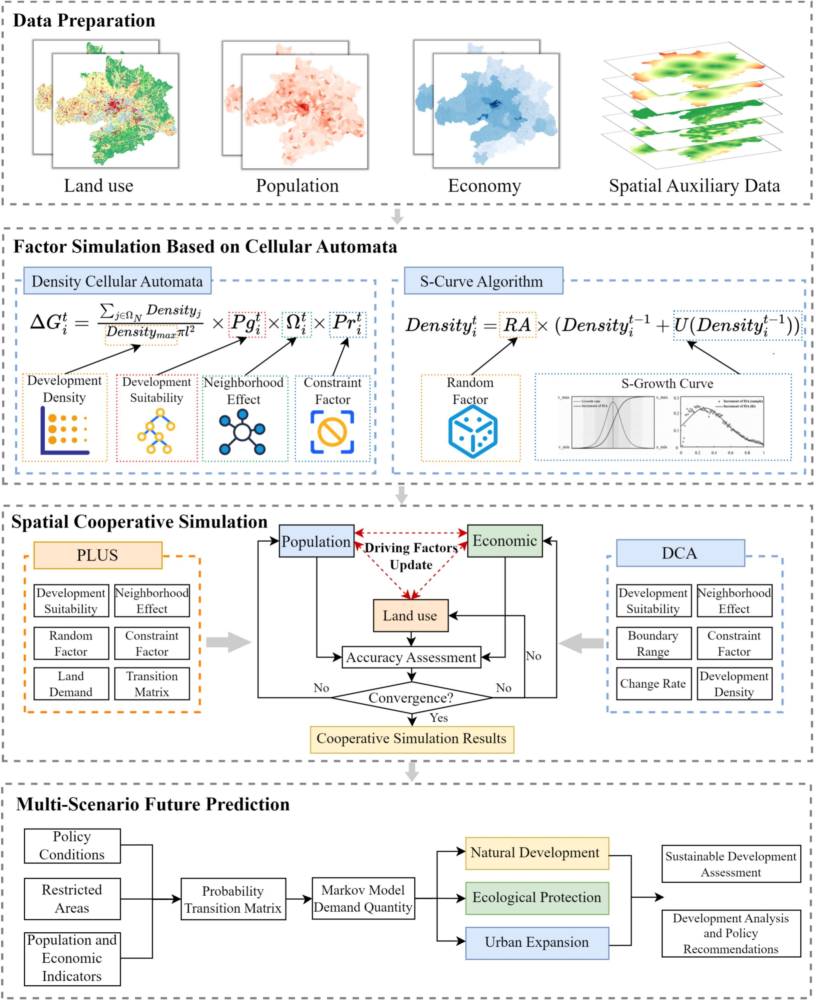
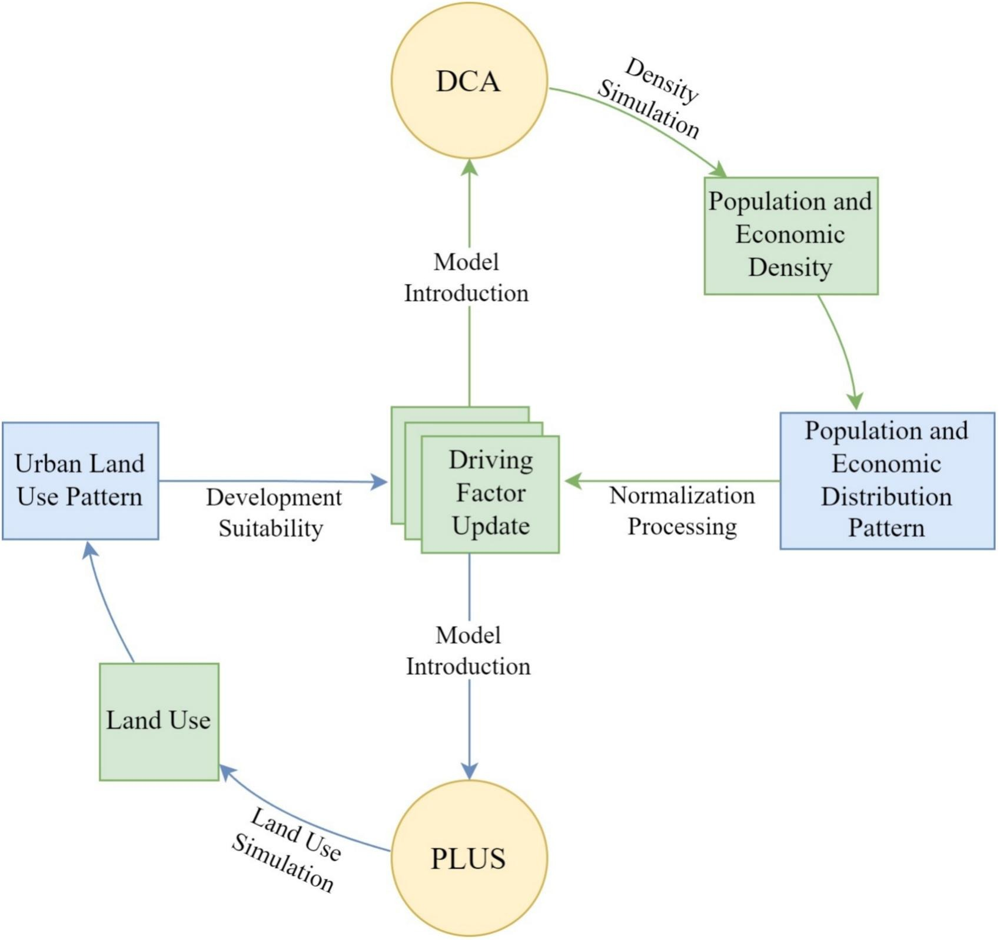
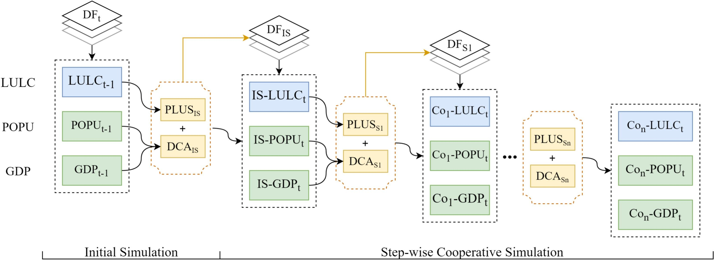
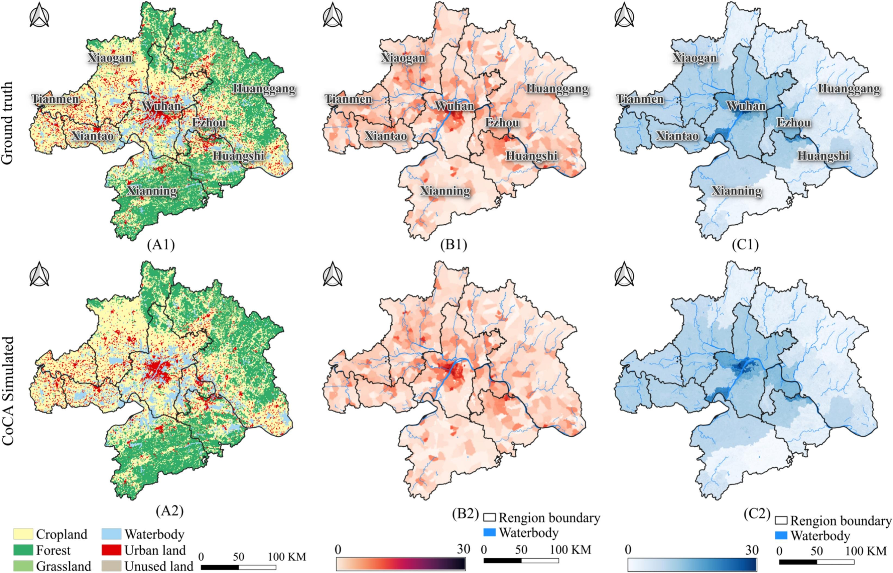
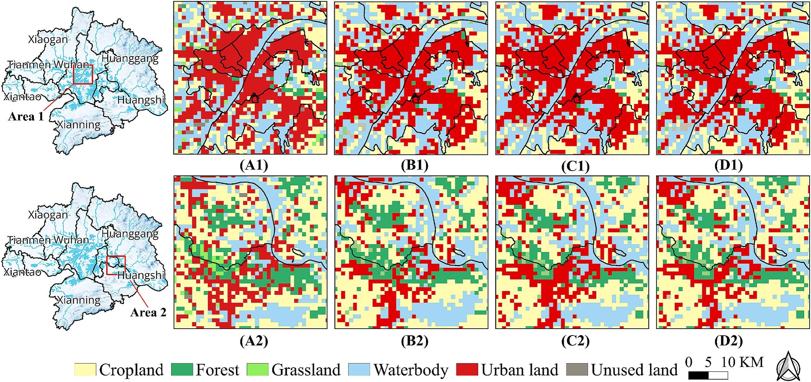
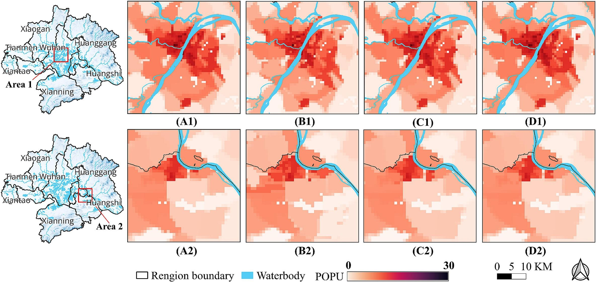
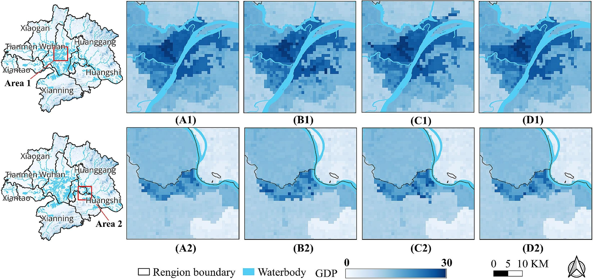
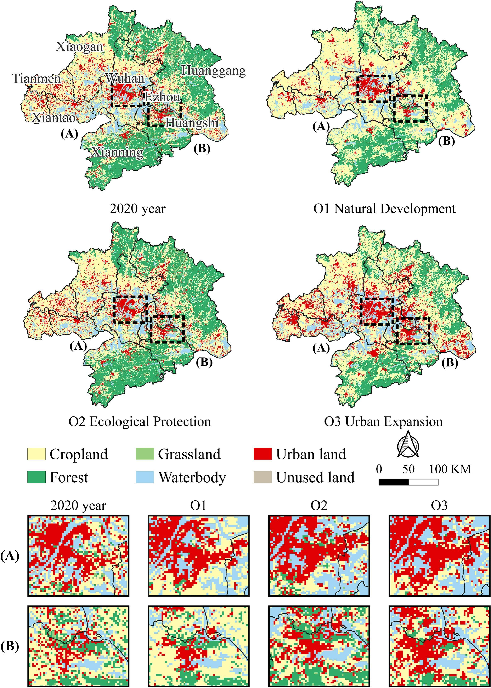

Urbanization pushes cities to develop into metropolitan areas, resulting in increasingly complex interactions among land use, population, and the economy. Traditional simulations often neglect cross-factor impacts, limiting their ability to capture the coupled dynamics of metropolitan systems. This study proposes a novel CoCA (Cooperative Cellular Automata) framework that integrates a Dynamic CA model (DCA, based on the S-curve algorithm) with a highly accurate patch-generation land use model. The CoCA framework includes three integrated modules — land use, population density, and economic density — enabling cooperative simulation of the "land-population-economy" triad. A dynamic updating strategy for driving factors is introduced to quantify multi-factor cooperative effects. Model verification using actual data from the Wuhan Metropolitan Area (WMA) demonstrates that CoCA not only maintains high accuracy in land use simulations but also achieves notable improvements in population and economic density simulations. Compared to the widely used PLUS and Clark CA models, land use simulation accuracy increased by over 35%, while the Mean Absolute Percentage Error for population and economic density simulations decreased by over 38%. Based on the dynamic updating strategy, three future scenarios were projected for WMA in 2030: Natural Development (O1), Ecological Protection (O2), and Balanced Urban Expansion (O3). This research provides a reference for exploring the impacts of multi-factor cooperation on simulation accuracy and offers practical guidance for coordinated development planning in metropolitan areas.
With the acceleration of global urbanization, individual cities are progressively merging into large-scale metropolitan areas characterized by highly interconnected social, economic, and spatial systems. In these complex regions, the interactions among land use, population distribution, and economic activity are the three most representative factors shaping metropolitan dynamics. Understanding and forecasting how these three factors co-evolve is essential for sustainable urban and regional planning.
Recent advances in land-use simulation have produced powerful models such as Cellular Automata (CA), Artificial Neural Networks (ANN), CLUE-S, FLUS, and PLUS. While these models can effectively predict land-use transitions at fine spatial resolutions, they typically operate on a single-factor basis — simulating land-use change alone without incorporating the coupled effects of population and economic dynamics. Conversely, approaches such as System Dynamics (SD) or intelligent prediction models (e.g., grey models, neural networks) can forecast population and economic trends at aggregate scales, but they lack the spatial resolution needed to capture intra-metropolitan heterogeneity.
To bridge this gap, this paper proposes the CoCA (Cooperative Cellular Automata) framework — a novel multi-factor cooperative simulation model that seamlessly integrates land use, population density, and economic density within a unified CA-based architecture. The key innovations are threefold: (1) a dynamic CA model (DCA) based on the S-curve algorithm that adaptively adjusts transition probabilities across simulation phases; (2) a dynamic updating strategy for driving factors that captures cross-factor cooperative effects; and (3) a multi-scenario prediction module that projects future "land-population-economy" patterns under diverse policy pathways. We validate CoCA through a comprehensive case study in the Wuhan Metropolitan Area (WMA), demonstrating significant accuracy gains over state-of-the-art models and providing actionable insights for coordinated metropolitan development.
The Wuhan Metropolitan Area (WMA), located in central China, encompasses nine prefecture-level cities including the core city of Wuhan and surrounding cities such as Huangshi, Ezhou, Xiaogan, Huanggang, Xianning, Xiantao, Qianjiang, and Tianmen. Covering a total area of approximately 57,800 km², WMA is one of China's most rapidly developing metropolitan regions and serves as a critical node in the Yangtze River Economic Belt. The area exhibits pronounced spatial heterogeneity in land-use patterns, population density, and economic development levels, making it an ideal testbed for cooperative multi-factor simulation.
The dataset for this study comprises: (1) land-use data for the years 2000, 2005, and 2010 at 30 m resolution; (2) population density and economic density (GDP) data at the county/district level for corresponding years; and (3) a suite of spatial driving factors including elevation, slope, distances to railways, highways, main roads, city centers, and water bodies. Data from 2000–2005 were used for model training, and 2005–2010 data served as the validation period.

The core of CoCA is the Dynamic CA (DCA) model, which extends traditional CA by incorporating the S-curve algorithm to dynamically adjust land-use transition probabilities across three simulation phases: an initial slow-growth phase, a rapid-expansion phase, and a saturation phase. This three-phase mechanism better reflects the real-world dynamics of urban growth. For each cell, the suitability probability P is calculated as a weighted combination of multiple driving factors, with weights determined through logistic regression or machine learning methods.
The CoCA framework integrates three cooperative modules — land use, population density, and economic density — within a unified simulation system. The novelty lies in the dynamic updating strategy: after each land-use iteration, the updated land-use pattern feeds back into the population and economic modules, and vice versa. This creates a closed-loop cooperative mechanism where changes in one factor influence the simulation of others, capturing the intricate feedbacks among land development, population migration, and economic growth.
Specifically, the cooperative simulation proceeds as follows: (1) the DCA model simulates land-use transitions based on current driving factors; (2) population density is updated using land-use-dependent allocation rules; (3) economic density is distributed according to population and land-use patterns; (4) the updated population and economic distributions are fed back as new driving factors for the next land-use iteration. Additionally, a patch-generation strategy ensures that simulated urban patches maintain realistic morphological characteristics rather than producing scattered, fragmented patterns.


To explore alternative future pathways, three policy-oriented scenarios were designed for WMA in 2030:
Model performance is evaluated using multiple complementary metrics: Figure of Merit (FoM), Overall Accuracy (OA), and Kappa coefficient for land-use simulation; Mean Absolute Percentage Error (MAPE), Root Mean Square Error (RMSE), and R² for population and economic density simulations. This multi-metric approach ensures comprehensive assessment across all three simulated factors.
The CoCA model was trained on 2000–2005 data and validated against 2005–2010 observations. For land-use simulation, CoCA achieved high accuracy with strong agreement between simulated and actual land-use patterns across all categories. The model accurately captured the spatial expansion trends of built-up land, particularly the infill and edge-expansion patterns characteristic of WMA's development trajectory.
For population density and economic density, the cooperative simulation produced spatially coherent distributions that closely matched the observed patterns. The dynamic updating strategy significantly outperformed the static approach, demonstrating that incorporating cross-factor feedbacks is essential for accurate multi-factor simulation. The cooperative effects were most pronounced in peri-urban areas where land-use transitions, population influx, and economic growth are most dynamic.

CoCA was benchmarked against two widely used models: PLUS (Patch-generating Land Use Simulation) and Clark CA. The comparative results demonstrate CoCA's substantial advantages:



Under the three scenarios projected for WMA in 2030, distinct "land-population-economy" patterns emerge:
Under Scenario O1 (Natural Development), built-up land continues to expand along historical trajectories, with Wuhan maintaining its dominant role as the population and economic center. Peripheral cities experience moderate growth but remain largely subordinate to the core.
Under Scenario O2 (Ecological Protection), built-up land expansion is significantly constrained, particularly in ecologically sensitive zones. Population and economic growth are concentrated within existing urban boundaries, resulting in higher densities but limited spatial expansion.
Under Scenario O3 (Balanced Urban Expansion), a polycentric urban structure emerges with more evenly distributed population and economic growth across the nine WMA cities. This scenario promotes coordinated regional development, reducing the core-periphery gap while maintaining moderate ecological protection.

The results confirm that multi-factor cooperation is not merely additive — the dynamic feedback between land use, population, and economy creates emergent patterns that single-factor models cannot reproduce. The dynamic updating strategy effectively captures these interactions, demonstrating that changes in population distribution alter land demand, which in turn reshapes economic geography, feeding back into further population movements. This finding has important implications for metropolitan planning: policies targeting any single factor (e.g., land-use zoning) will inevitably ripple through the entire system.
The S-curve-based DCA model's three-phase mechanism (slow growth, rapid expansion, saturation) provides a more realistic representation of urban development dynamics than linear or single-phase models. This temporal nuance is particularly important for metropolitan areas like WMA, where different cities are at different development stages simultaneously. The DCA model adaptively adjusts transition probabilities based on each location's development phase, yielding higher accuracy across heterogeneous urban landscapes.
The multi-scenario predictions offer concrete guidance for WMA's coordinated development:
Several limitations warrant acknowledgment. First, the population and economic density data were available only at the county/district level, limiting the spatial granularity of these modules. Second, the current framework does not incorporate policy instruments such as transport infrastructure investments or industrial relocation incentives. Future work could integrate higher-resolution socio-economic data, additional factors (e.g., transport networks, public services), and more nuanced policy levers to further enhance the model's applicability.
This study presents CoCA, a novel spatial cooperative simulation framework for metropolitan areas that integrates land use, population density, and economic density within a unified CA-based architecture. The key contributions are:
The CoCA framework offers a powerful tool for understanding and predicting the co-evolution of metropolitan systems, and its modular design facilitates extension to other regions and additional socio-economic factors. As metropolitan areas continue to grow worldwide, cooperative simulation approaches like CoCA will become increasingly essential for sustainable regional planning.
@article{ZENG2025105442,
title = {CoCA: Spatial cooperative simulation and future prediction of “land-population-economy” in urban agglomerations},
journal = {Landscape and Urban Planning},
volume = {263},
pages = {105442},
year = {2025},
issn = {0169-2046},
doi = {https://doi.org/10.1016/j.landurbplan.2025.105442},
url = {https://www.sciencedirect.com/science/article/pii/S0169204625001495},
author = {Chenglong Zeng and Yao Yao and Jiayao Liu and Zhenhui Sun and Kun Zhou and Dongsheng Chen and Qingfeng Guan}
}
本文内容由 DeepSeek-V4 Pro AI 自动总结生成，仅供参考。详细信息请以原文为准。
Content on this page is AI-summarized by DeepSeek-V4 Pro. Please refer to the original publication for authoritative information.